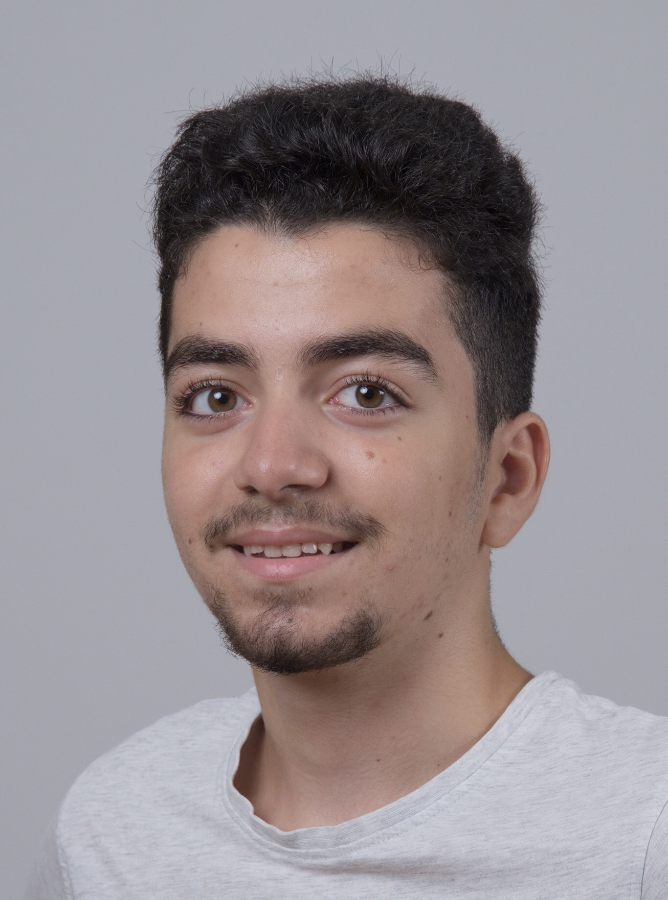

Ozgur

Wer ich bin
Wer bin ich eigentlich? Ich bin Özgür Bulut, ein ganz normaler Jugendlicher wie jeder andere.
2006 9. November bin ich in einem Spital geboren, der sich in Italien befindet, aber ich bin
kein Italiener, ich bin nur dort geboren, denn meine Eltern kommen aus der Türkei. Ich bin das
jüngste Kind in meiner Familie. Ali und Muharrem sind meine Brüder, Ali ist 22 Jahre alt und ist
auch in Italien geboren. Muharrem ist 29 Jahre alt und wurde in der Türkei geboren, weil meine Eltern
früher dort gewohnt hatten.
Hobbys
In Italien hatte ich kein WLAN, also spielte ich ab und zu Fussball. Als ich in die Schweiz kam, traf
ich viele neue Freunde und so spielte ich mit denen viele andere Sportarten, wie Unihockey, Basketball, Billard
und Volleyball. Zurzeit spiele ich oft Fussball mit meinen Freunden, aber am meisten verbringe ich Zeit im Fitnessstudio.
Ich gehe momentan 4 mal in der Woche im Gym für ein und halb bis zwei Stunden. Gerne würde ich später auch eine
Kampfsportart ausüben wie Wrestling oder Kickboxen.
Ziele
Als Jugendlicher hat man viele Ziele und sowohl ich als auch. Mein Hauptziel von meinem Leben ist reich
werden, klar will das jeder, aber ich will reich sein, um meine Familie und meine Freunde glücklich zu
machen und so viel wie möglich zusammen Spass haben. Wenn ich dieses Ziel erreichen würde, würde ich sagen,
dass ich es geschafft habe. Dies ist nicht mein einziges Ziel, denn ich habe auch andere Ziele, die nicht so
wichtig sind wie mein Hauptziel. Einer meiner Ziele ist richtig religiös zu sein, weil ich finde im Islam finde
ich meine ruhe für mich und meine Familie. Der andere ist Informatiker zu werden, ich habe eine grosse Passion
für den IT Bereich, weil alles im IT Bereich fasziniert mich wie alles funktioniert.
Erlebnisse
Ich bin 16 Jahre alt und habe ziemlich vieles erlebt. In Italien habe ich nichts besonderes erlebt, ich habe
dort fast nur Italienisch gelernt. Als ich in die Schweiz kam, erlebte ich viel mehr, weil ich auch alleine
raus gehen konnte mit meinen Kollegen. Aber nicht nur in der Freizeit, sondern auch in der Schule habe ich
viele Ausflüge gemacht, sowie zum Seilpark gehen und den Rheinfall besucht. Als ich in die Schweiz kam, traf
ich Cousins und Cousinen. Mit ihnen habe ich auch vieles erlebt, wir gingen jedes Wochenende raus und gingen
Bowlen oder Go Kart fahren.